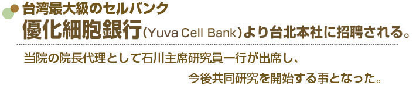
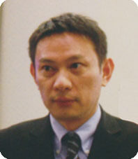
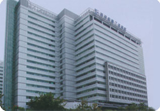
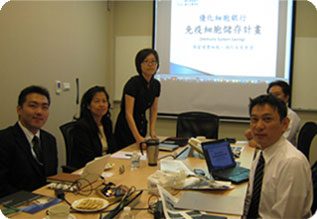
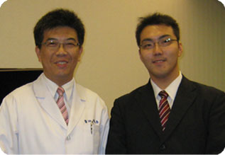
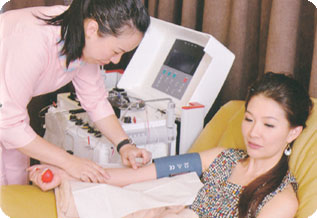
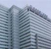

简体中文
简体中文




優化生醫科技股份有限公司
董事長 潘 俊佑(Rex Pan)
医療法人社団 聖友会
名古屋メディカル・クリニック
理事長 内藤 康弘
優化細胞銀行顧客説明会
2011年7月2日優化生醫科技股份有限公司 潘俊祐董事長が当院へ訪問。
当院での培養実績、センター見学、来院患者数などの説明を含め内藤院長、石川主席研究員と面談。
同年9月23日中華民国台北市 優化生醫科技股有限公司より招聘を受け、内藤院長の代理として、石川主席研究員が優化細胞銀行 潘 俊佑(Rex Pan)董事長をはじめ、役員各位及び直営 優化診療所院長と面談。菁英見證養生茶會へ出席。優化細胞銀行新規顧客へ日本国での免疫細胞療法の現状を報告し、安心して受けられるものであることを発表し、台湾大学教授から免疫療法が副作用がなく、中華民国の治験でも効果が認められるとの発表もあった。
優化細胞銀行における会見※1

優化生醫科技股份有限公司

潘董事長と石川主席研究員との会議
潘董事長と石川主席研究員

陳建惠醫師と石川主席研究員

採血風景※2
台北訪問時に、優化細胞銀行 潘俊祐董事長・鑫品生醫科技股有限公司 龐德玲博士より専門分野の情報交流及び打ち合わせ、培養センター見学を実施。
医療機器等の確認を行い、名古屋メディカル・クリニックにおける学術及び治療結果を発表。菁英見證養生茶會にて説明を実施。今後名古屋メディカル・クリニックと優化細胞銀行とのより一層の提携及び情報交換を行い協力関係を強化することになった。
両社の益々の発展の為、尽力することを確認した。
※1,※2 パンフレットからの引用

鑫品生醫科技有限公司
2004年 台北市に設立。癌抗原EBウイルスの研究開発及び細胞療法の培養研究。同社EBウイルスはアメリカ及び台湾で絶大な評価を受けている。
2009年8月 優化生醫科技股份有限公司を子会社として設立。
2011年9月 優化生醫科技股份有限公司は台湾最大の細胞銀行として記者会見の模様を雑誌・現地メディアなどに取り上げられる。